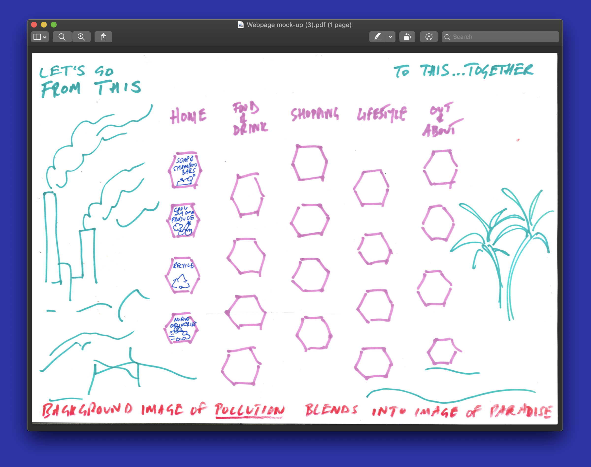
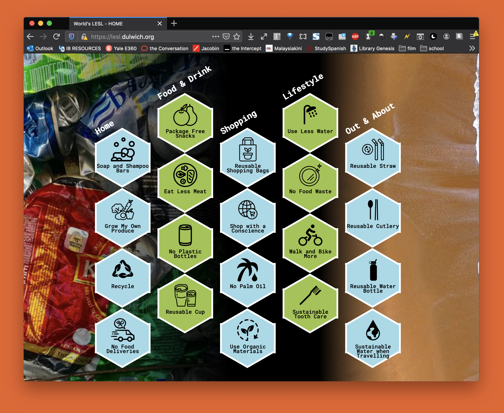
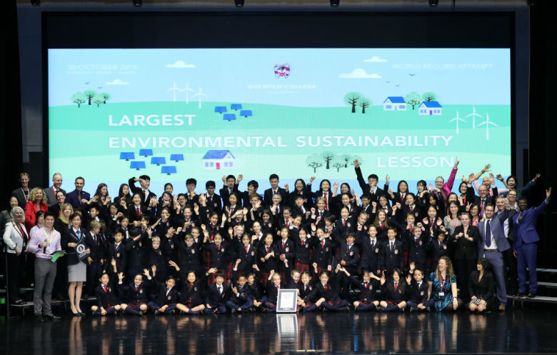

the Guinness World Record Largest Environmental Sustainability Lesson.
Event Overview
In November of 2019, the Largest Environmental Sustainability Lesson ran at Dulwich College International. This was an event in which DCI, an international school group, through the use of livestream and a website, taught a lesson about Sustainability to 3,006 students. In this lesson, students were educated on the impacts of their personal sustainability and were urged to set goals for the next month. These goals ranged from not using palm oil, to growing one’s own produce. Being a student at Dulwich College Beijing, I was approached to create the LESL website homepage, to which I gladly agreed.
The Process
Mr. Phil Whitaker, the head of tech and a personal mentor, approached me asking for some help with hexagonal CSS. After a few back and forth and a bit of conversation we were working with Mr. Anthony Reich, the sustainability lead at Dulwich College Shanghai, on this project.

Faded into the background across the whole of the page we will have some images… On the left we will have the image of the burning factories and ravaged forest, and then this blends into the picture of the beach paradise. In front/on top of all that is the PDF image above, which has the 20 hexagons in 5 different columns, with the small mini-headings at the top of the columns … If each column could be made up of hexagons of slightly different colours that would be ideal. And then on top of each hexagon is the title and icon I sent through last night.
I made a prototype, and worked on this for several hours a week for around a month. Creating a website fully based off someone else’s vision and design was much easier than expected, and this process went smoothly. Soon, with the help of Mr. Whitaker, a basic template was ready. Getting it live was another issue mostly handled by him.
The website ran on a subdomain of the main school domain, and is still up as of the timing of writing. It was mostly viewed on laptop and tablet computers.

What I Learnt
A major issue I came across was a convoluted pipeline. This code started as a small little css class for hexagons that I emailed across. Then, changes were made, and I zipped it and emailed it. Soon, this multi-folder zip was being emailed back and forths and it was a mess to keep track of, but it always felt too close to done to need to setup a pipeline for.
Version control is incredibly popular for a reason. They’re simple to setup these days, only requiring a couple clicks, but make your life so much easier. I generally don’t need a super complex system, just a private Github repo. I say this to myself, but again and again I forget. And your project always feels 90% complete, and it’s not. I’ve started habitually starting new Github repos for new projects, and now my workflow is 10x cleaner.
One thing that went absolutely swimmingly with this project was the cooperation. I went ahead and executed a client’s vision best I could, and it turned out brilliant. We had a group chat, and we regularly sent messages to make sure we knew what the vision was, when we could expect updates, and what to do. Communicating a vision for a creative project is not easy, and asking questions always comes in handy.
Overall, this was a brilliant experience, and I felt I learnt a ton as a developer and a creative. This is to this day the most viewed website I’ve ever produced, and I’m glad I took part.
